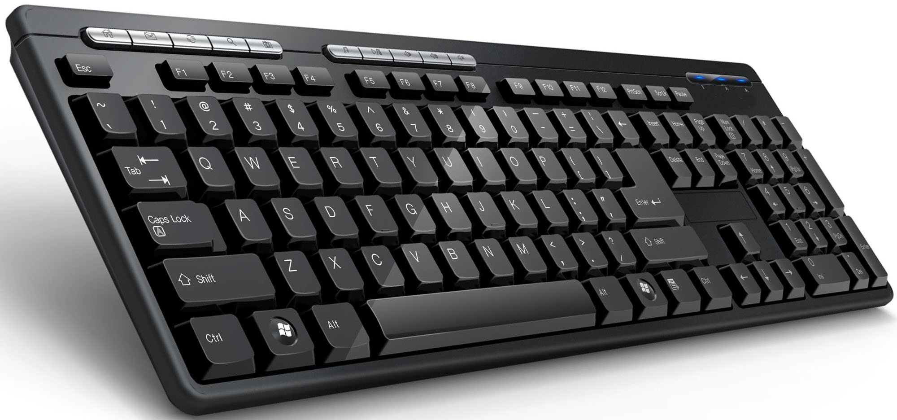
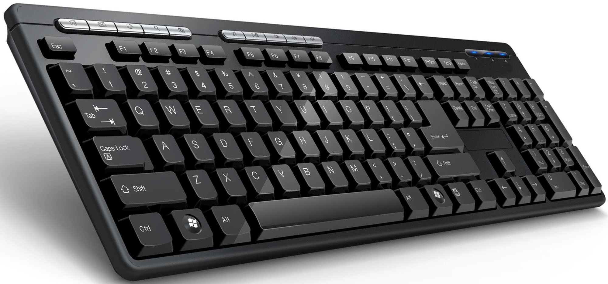

The computer case is a plastic or metal enclosure that houses most of the components. Those found on desktop computers are usually small enough to fit under a desk, however in recent years more compact designs have become more common place, such as the all-in-one style designs from Apple, namely the iMac. Though a case can basically be big or small, what matters more is which form factor of motherboard it designed for. Laptops are computers that usually come in a clamshell form factor, again however in more recent years deviations from this form factor have started to emerge such as laptops that have a detachable screen that become tablet computers in their own right .